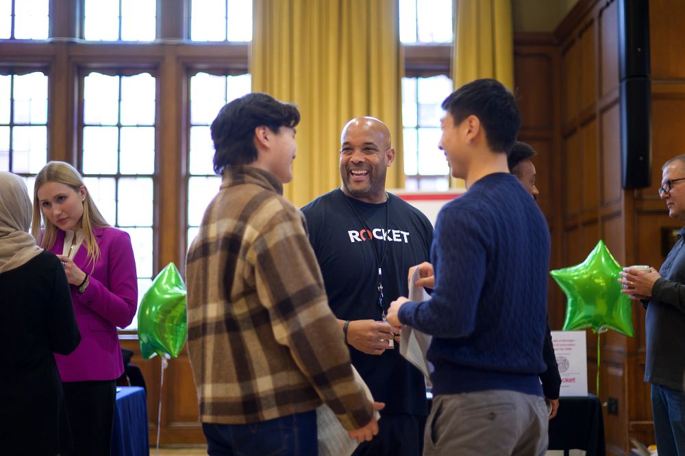

Build Connections That Support Your Career Growth
Networking is the process of building and maintaining professional relationships that support career exploration and development. It focuses on learning from others, exchanging information, and gaining insight into industries, roles, and career paths. Effective networking is relationship-centered and ongoing, rather than transactional or job-focused.
Networking & Connections FAQ
What is the difference between networking and job searching?
Networking focuses on building relationships and learning from professionals, while job searching focuses on applying for open positions. Networking is not about asking for a job; it is about gaining information, insight, and advice that can support long-term career development.
What is an informational interview?
An informational interview is a short conversation with a professional to learn about their career path, role, or industry. It is not a job interview and should not include requests for employment. These conversations are designed to help individuals explore careers and build professional connections.
Who should I reach out to when networking?
Networking outreach can be directed toward alumni, professionals in roles or industries of interest, or individuals recommended through personal or academic connections. Alumni are often a strong starting point due to shared educational experiences.
How long should a networking conversation last?
Most informational interviews last between 20 and 30 minutes. Keeping conversations brief and focused demonstrates respect for the professional’s time while still allowing for meaningful discussion.
Networking Helps Individuals
- Explore career paths and industries through real-world perspectives.
- Learn about roles, skills, and workplace cultures not always visible in job descriptions.
- Gain advice on career decision-making and professional growth.
- Build long-term professional relationships that may lead to future opportunities.
Strong professional networks support informed career choices and ongoing career development.

Informational Interviews
An informational interview is a short, structured conversation with a professional to learn about their career path, role, or industry. These conversations are not job interviews and do not involve requesting employment. Instead, they are designed to gather information, advice, and perspective while building professional connections.
Professional Outreach
- Professional outreach involves initiating contact with alumni or professionals in a respectful and concise manner. Effective outreach messages are brief, personalized, and focused on learning. The goal of outreach is to start a conversation, not to request a job or referral.
- Clear, well-structured outreach increases the likelihood of receiving a response and building a positive professional connection.
Networking and Connections Resources
Intro to Making Connections
Learn the basics of professional networking and how to begin making meaningful connections.
Open Intro to Making ConnectionsNetworking Outreach Emails
Review examples of concise, respectful outreach messages you can adapt for your own networking.
Open Outreach EmailsInformational Interviews Using the TIARA Method
Use the TIARA method to guide stronger questions and more useful networking conversations.
Open TIARA Method ResourceCreating a LAMP List for Strategic Networking
Create a LAMP list to organize networking contacts and approach outreach in a more strategic way.
Open LAMP List ResourceWorkshop Slides Conference Prep
Prepare for conferences and events with practical strategies for starting conversations and following up.
Open Conference Prep SlidesMaintaining Professional Connections
Networking is an ongoing process. Following up after conversations, expressing appreciation, and staying in touch over time are important practices for maintaining professional relationships. Small, consistent efforts help sustain connections and support long-term career development.